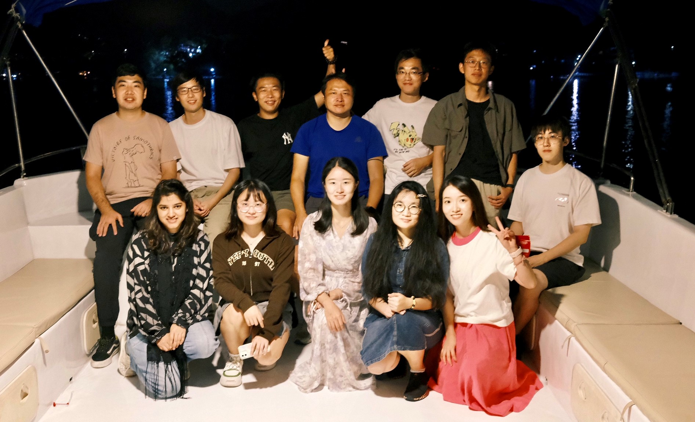

<link rel="stylesheet" href="https://cdn.jsdelivr.net/gh/jpswalsh/academicons/css/academicons.min.css">
<article id="true-undefined" class="article article-type-true" itemscope="" itemprop="blogPost">
               
               <p align="center">
                <a href="https://github.com/cure-lab"><i class="fa fa-github fa-lg"></i> CureLab</a>&nbsp;&nbsp;&nbsp;
      <a href="https://scholar.google.com/citations?user=eSiKPqUAAAAJ&hl=zh-CN"><i class="ai ai-google-scholar ai-lg"></i>Google Scholar</a>&nbsp;&nbsp;&nbsp;</p>
                <hr>
            
           <p><i style="font-size:20px"><b style="color:#000000;">Openings: </b> Our lab has several openings for self-motivated Ph.D. students, post-docs, and visiting interns/scholars. Please send your CV to Prof. Xu if your are interested.</i> </p>    
               <div style="font-size:20px;">
                  <p style="font-size:20px;margin-left:20px;text-align:justify;text-justify:inter-ideograph;"><span style="font-size:medium;font-family: Arial">In the <u style="color:#E3170D">CU</u>HK <u style="color:#E3170D">RE</u>liable Computing laboratory (<b style="color:#E3170D">CURE Lab.</b>), our primary research objective revolves around the exploration of effective and efficient methods for high-quality text-to-image generation. Our focus lies in developing fine-grained conditions to enable controllable generation and creating superior datasets to train powerful foundation models. Additionally, we are also dedicated to the construction of trustworthy AI generation systems that actively identify and rectify reliability issues. Through our research efforts, we strive to enhance the performance and reliability of AI generation systems in a progressive manner.
                   </span></p>
                </div>
                <hr>
              </article>


    <header class="masthead text-center">
      
        <span style="display: block; margin-bottom: 3em"></span>
      <div class="w3-container" style="   background: #f0f8ff; padding: 15px; border-radius:10px; border: 1px solid #5d8aa8">
        <div style="text-align:left">
          <h3> Recent News </h3>
          <u>Happenings of the last two months.</u>
          <span style="display: block; margin-bottom: 1em"></span>
          <div class="news">
              {% capture now %}{{ 'now' | date: '%s' | minus: 5184000 }}{% endcapture %}
              <ul style="list-style-position:outside;padding:20px" >
                {% for new in site.data.news %}
                  {% capture date %}{{ new.date | date: '%s' | plus: 0 }}{% endcapture %}
                  {% if date > now %}
                    <li>
                      <span>
                        {{ new.details }}
                      </span>
                    </li>
                  {% endif %}
                {% endfor %}
              </ul>
          </div>
        </div >
      </div>
          <span style="display: block; margin-bottom: 3em"></span>
    </header>
